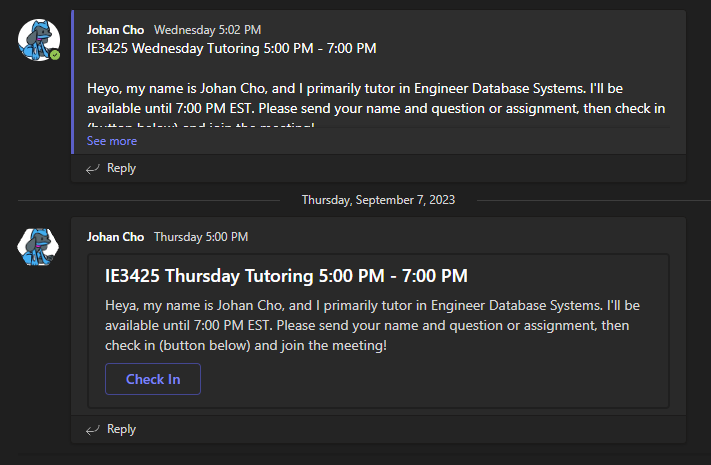

projects
some of the work i've done
personal projects
projects i've worked on in my free time
I used to work for Keolis; our team developed the backend of a web app that mapped out the MBTA's Commuter Rail service that Keolis ran in real-time. It was an internal app that I became reliant on to commute into Boston, and I knew that I'd lose access to it when I left the company, so I made my own public-facing version. I now use it to commute!
Northeastern's college of engineering tutoring center requires that office hours begins with a specific teams message. I created a Python program that sends a message to a microsoft teams channel at a specific time or interval to automate myself out of that process.
